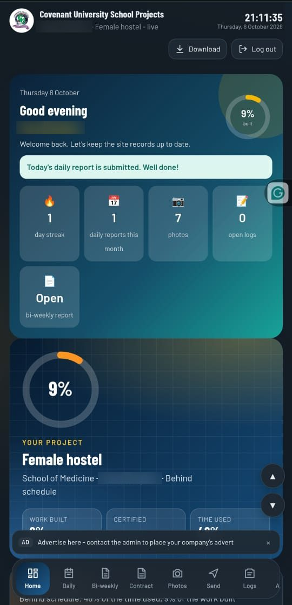
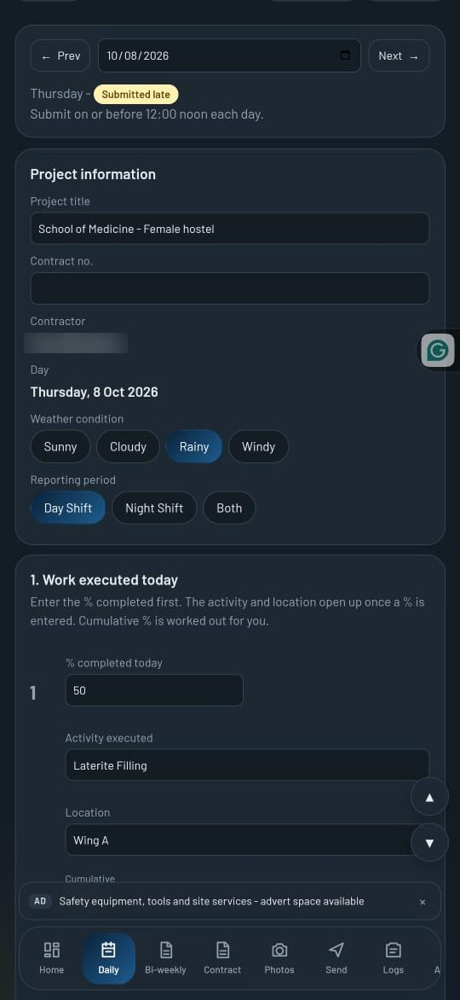
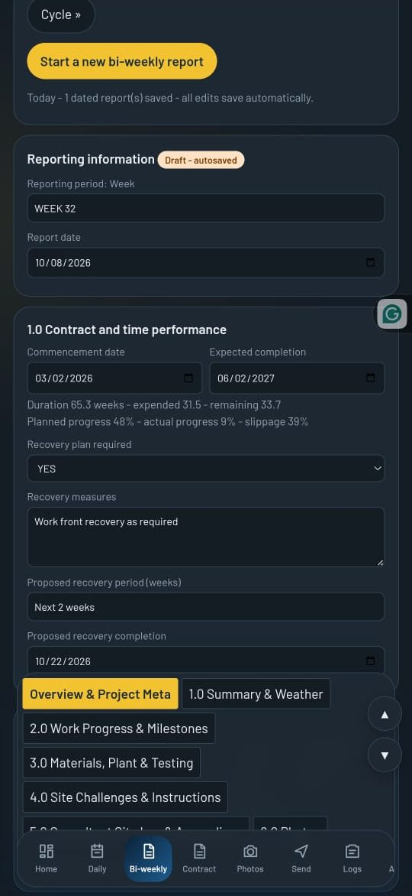
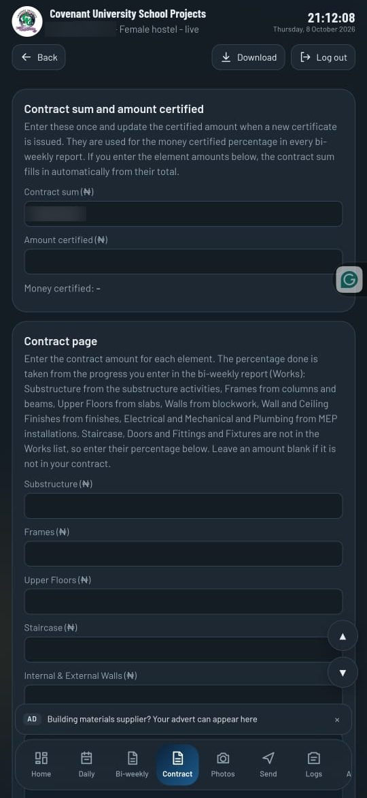
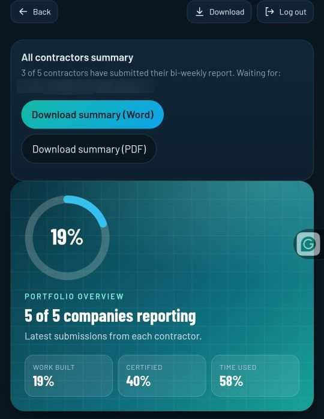

About me
I'm Olusegun Opeyemi Emmanuel, a web developer based in Ota, Ogun State. I design, build and deploy complete web applications, from the interface to the cloud back end, and I like turning a real workflow problem into a clean, reliable and easy-to-use product. My most recent project is the reporting app for Covenant University building projects, which is now in live use.
Role
Olusegun Opeyemi Emmanuel - web developer: design, front end, Firebase back end and deployment
Client
Covenant University - College of Medicine / Health and Pharmaceutical Science building projects
Timeline
27 Sep 2026 - 6 Oct 2026
Users
Five contractors, each on their own building, plus the project admin
The problem
Contractors on different campus buildings produced daily and bi-weekly reports by hand, so the admin had no single, current view of progress or money spent against the contract.
The solution
I built an installable web app where each contractor logs in, fills the same structured reports, and submits. The admin sees every update live, with progress, contract value done and remaining, and branded PDF reports ready to download.
The app in action

Daily reminder, streak and quick stats

Structured form for work executed each day

Contract and time performance with recovery plan

Contract amounts feed the amount done and remaining

Portfolio view across all contractors
Key features
Role-based access
Separate contractor and admin experiences. Each company can only see and edit its own data, enforced by Firestore security rules.
Daily and bi-weekly reports
Structured forms for progress by element, materials, testing, plant, manpower and PPE, with dates, drafts and submission.
Contract value tracking
Contractors enter contract amounts once. Progress percentages then work out the amount done and remaining for each element.
Live admin dashboard
Realtime sync pushes every update, new log and submitted report to the admin as it happens, with in-app notifications.
Works offline
A service worker and local saving let contractors keep working on site with weak signal, then sync automatically when back online.
PDF reports with photos
Reports and site photographs are generated in the browser and downloaded as PDF, matching the university's report layout.
Under the hood
Sync and data model
Firebase Authentication and Firestore, with per-company collections for reports, history, photos, daily entries and logs.
Client-side documents
Word templates built with docx, rendered and converted to PDF in the browser using docx-preview, html2canvas and jsPDF.
Installable PWA
Web manifest, cached assets and update handling, deployed on Netlify so it installs like a native app on phones.
Challenges and what I learned
Keeping each company's data separate
Contractors and the admin share one database, so I tied Firestore security rules to each sign-in. Each company can only read and write its own records, and the admin can see all. I learned that the rules must cover every collection, including daily reports and logs, or data silently fails to sync.
Working without a steady connection
Site signal is unreliable, so work is saved on the phone first and synced when the contractor is back online. I learned to merge instead of overwrite, and to restore a contractor's earlier entries when they sign in on another device.
Generating reports in the browser
The university's report layout had to be reproduced as Word and PDF files, with photos, without a server. I learned to build it in stages, and to fall back to a Word file with a clear message if PDF creation fails.
Skills
Front end
JavaScript, HTML, CSS, responsive design, installable web apps (PWA)
Back end and data
Firebase Authentication, Cloud Firestore, security rules, realtime sync
Offline working
Service workers, caching, automatic sync
Documents and PDF
docx, docx-preview, html2canvas, jsPDF
Deployment
Netlify
Outcome
The app has been put into live use and confirmed to be working, with 5 reports submitted in a single day. Contractors now have one place to report, and the admin has one current view of progress and contract value across the buildings, with reports and photos ready to download.